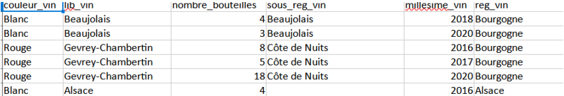
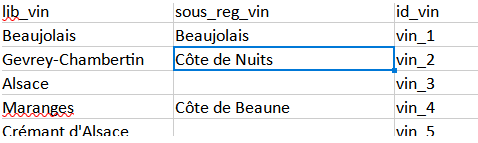
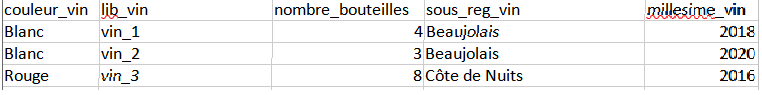

On devait modifier un fichier excel afin d’obtenir plusieurs tables et faire des commandes sql
Tableau d'origine:

Quelques tables crées à partir de celle la :


Ici, id_vin = lib_vin. Et le fait d'avoir une ou plusieurs variables en commun va permettre de faire des liaisons entre les tables. et de créer une base de données
Après ça, on a créé les tables avec la commande CREATE:
CREATE TABLE vins
(
lib_vin CHARACTER
sous_reg_vin CHARACTER
id_vin CHARACTER
);
Puis nous les avons importer dans un serveur PostgreSQL(qui a été supprimé) et insérer les valeurs que vous voyez dans les images.
Enfin, nous avons utiliser la commande SELECT pour pouvoir sélectionner qu'une partie de nos tables.
Exemple:
SELECT *
FROM vins
WHERE sous_reg_vins ="Beaujolais";
Cette commande nous donne tous les vins de Beaujolais.